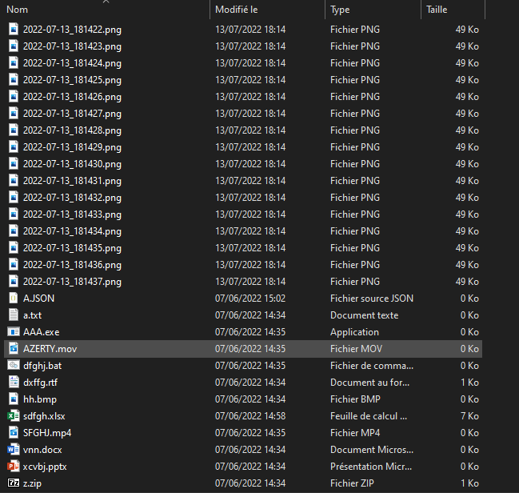

Trieur de fichiers est un logiciel triant les fichiers d'un dossier par extension en créant d'autres dossiers dans lequels ils seront déplacés.
Voici ses principales caractéristiques :
- Plus de 70 extensions de fichiers sont supportées, les autres extensions sont déplacées dans un dossier "Autres".
- Le logiciel est assez rapide.
- Bien qu'il n'ait pas d'interface graphique, il est très simple d'utilisation.
Attention : ce logiciel sortira bientôt avec une interface graphique.
Images :
Avant :
Après :